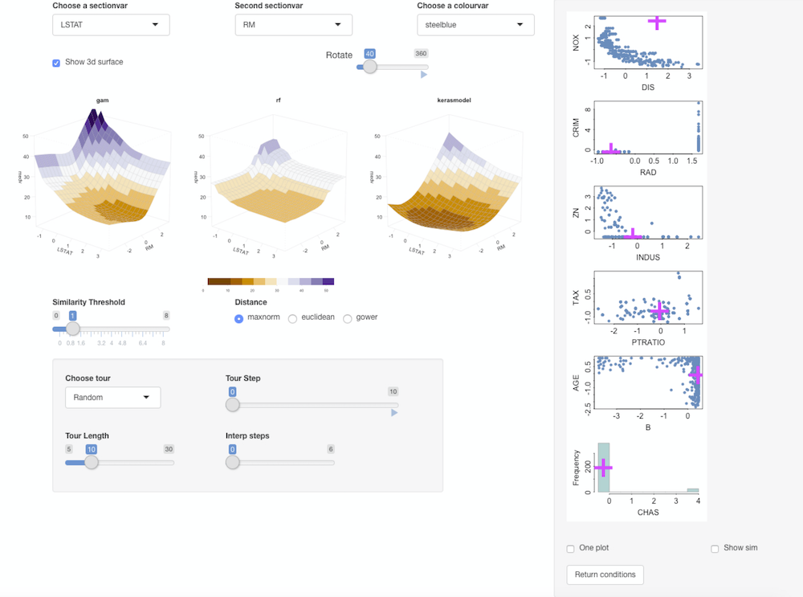

keras is an R based interface to the Keras: the Python Deep Learning library. It uses the TensorFlow backend engine.
The basic workflow is to define a model object of class keras.engine.training.Model by initialising it using the keras_model_sequential function and then adding layers to it. Function fit trains a Keras model. It requires the predictors (inputs) and responses (targets/labels) to be passed a two separate data objects as vector, matrix, or arrays.
Use the Diabetes in Pima Indian Women dataset from library MASS
Prepare data for Keras and Condvis:
# Training features
Pima.training <- Pima.tr[,1:7]
# Testing features
Pima.testing <- Pima.te[,1:7]
# Scale the data
Pima.training <-as.matrix(scale(Pima.training))
means <- attr(Pima.training,"scaled:center")
sds<- attr(Pima.training,"scaled:scale")
Pima.testing <- as.matrix(scale(Pima.testing, center=means, scale=sds))
# One hot encode training target values
Pima.trainLabels <- to_categorical(as.numeric(Pima.tr[,8]) -1)[, 2]
# One hot encode test target values
Pima.testLabels <- to_categorical(as.numeric(Pima.te[,8]) -1)[, 2]
# Create dataframes for Condvis
dtf <- data.frame(Pima.training)
dtf$Pima.trainLabels <- Pima.tr[,8]
dtf.te <- data.frame(Pima.testing)
dtf.te$Pima.testLabels <- Pima.te[,8]Define and fit the model:
model <- keras_model_sequential() # Add layers to the model
model %>%
layer_dense(units = 8, activation = 'tanh', input_shape = c(7)) %>%
layer_dense(units = 1, activation = 'sigmoid')
# Print a summary of a model
summary(model)
# Compile the model
model %>% compile(
loss = 'binary_crossentropy',
optimizer = 'adam',
metrics = 'accuracy'
)
# Fit the model
history <-model %>% fit(Pima.training, Pima.trainLabels,
epochs = 500,
batch_size = 50,
validation_split = 0.2,
class_weight = as.list(c("0" = 1, "1"=3))
)Condvis uses a generic CVpredict to provide a uniform interface to predict methods. For classification, the choice of ptype allows for output for each observation as:
ptype = “pred” (default)ptype = “prob” (e.g. \(P(X=1)\) in binary classification).ptype = “probmatrix”
kresponse <- "Pima.testLabels"
kpreds <- setdiff(names(dtf.te),kresponse)
CVpredict(model, dtf.te[1:10,], response=kresponse, predictors=kpreds)
CVpredict(model, dtf.te[1:10,], response=kresponse, predictors=kpreds, ptype="prob")
CVpredict(model, dtf.te[1:10,], response=kresponse, predictors=kpreds, ptype="probmatrix")Note that for keras models so one needs to specify the name of response and predictors for CVpredict. When creating the Condvis shiny app, arguments for CVpredict can be passed in condvis using predictArgs argument.
Calculate model accuracy from:
Compare to LDA:
fit.lda <- lda(Pima.trainLabels~., data = dtf)
mean(CVpredict(fit.lda, dtf.te) == dtf.te$Pima.testLabels)LDA scores higher on accuracy. It is known that a linear model performs best for this dataset.
kresponse <- "Pima.trainLabels"
kArgs1 <- list(response=kresponse,predictors=kpreds)
condvis(dtf, list(model.keras = model, model.lda = fit.lda), sectionvars = c("bmi", "glu"), response="Pima.trainLabels",predictArgs = list(kArgs1, NULL), pointColor = "Pima.trainLabels")Click the showprobs button to see class probabilities.
Use the Boston housing data. This is one of the examples from keras
Prepare data:
boston_housing <- dataset_boston_housing()
c(train_data, train_labels) %<-% boston_housing$train
c(test_data, test_labels) %<-% boston_housing$test
# Normalize training data
train_data <- scale(train_data)
# Use means and standard deviations from training set to normalize test set
col_means_train <- attr(train_data, "scaled:center")
col_stddevs_train <- attr(train_data, "scaled:scale")
test_data <- scale(test_data, center = col_means_train, scale = col_stddevs_train)Fit the model:
build_model <- function() {
model <- keras_model_sequential() %>%
layer_dense(units = 64, activation = "relu",
input_shape = dim(train_data)[2]) %>%
layer_dense(units = 64, activation = "relu") %>%
layer_dense(units = 1)
model %>% compile(
loss = "mse",
optimizer = optimizer_rmsprop(),
metrics = list("mean_absolute_error")
)
model
}
model <- build_model()
model %>% summary()
# Display training progress by printing a single dot for each completed epoch.
print_dot_callback <- callback_lambda(
on_epoch_end = function(epoch, logs) {
if (epoch %% 80 == 0) cat("\n")
cat(".")
}
)
epochs <- 500
# Fit the model
early_stop <- callback_early_stopping(monitor = "val_loss", patience = 20)
model <- build_model()
history <- model %>% fit(
train_data,
train_labels,
epochs = epochs,
validation_split = 0.2,
verbose = 0,
callbacks = list(early_stop, print_dot_callback)
)Create dataframes for condvis:
column_names <- c('CRIM', 'ZN', 'INDUS', 'CHAS', 'NOX', 'RM', 'AGE',
'DIS', 'RAD', 'TAX', 'PTRATIO', 'B', 'LSTAT')
train_df <- data.frame(train_data)
colnames(train_df) <- column_names
train_df$medv <- as.numeric(train_labels)
test_df <- data.frame(test_data)
colnames(test_df) <- column_names
test_df$medv <- as.numeric(test_labels)
kpreds <- column_names
kresponse <- "medv"Fit some other models for comparison (a random forest and a generalised additive model):
suppressMessages(library(mgcv))
gam.model = gam(medv ~ s(LSTAT) + s(RM) + s(CRIM), data=train_df)
suppressMessages(library(randomForest))
rf.model <- randomForest(formula = medv ~ ., data = train_df)Use CVpredict to compare RMSE in the scaled data:
mean((test_labels - CVpredict(model, test_df, response=kresponse, predictors=kpreds))^2)
mean((test_labels - CVpredict(gam.model, test_df))^2)
mean((test_labels - CVpredict(rf.model, test_df))^2, na.rm=TRUE)RF gives the best fit.
kArgs <- list(response=kresponse,predictors=kpreds)
condvis(train_df, list(gam = gam.model, rf = rf.model, kerasmodel = model), sectionvars = c("LSTAT", "RM"),predictArgs = list(NULL, NULL, kArgs) )Ticking Show 3d surface shows the 3d-surface of the fit and you can use the Rotate slider to rotate them around the z-axis.

Random forest gives a blockier fit, compared to the smooth gams and the neural net. The RF fit is more flexible in the areas where there is more data points.